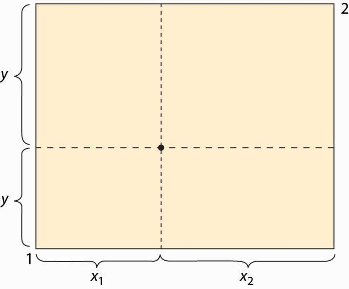
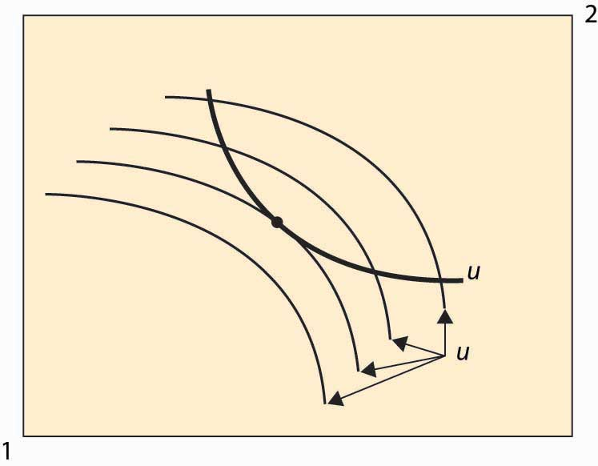
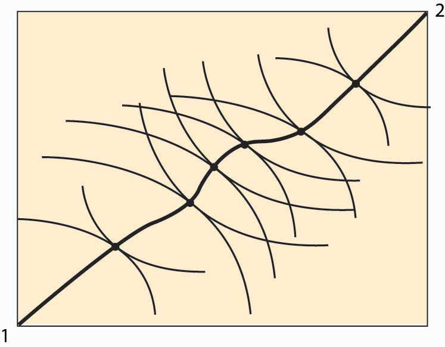
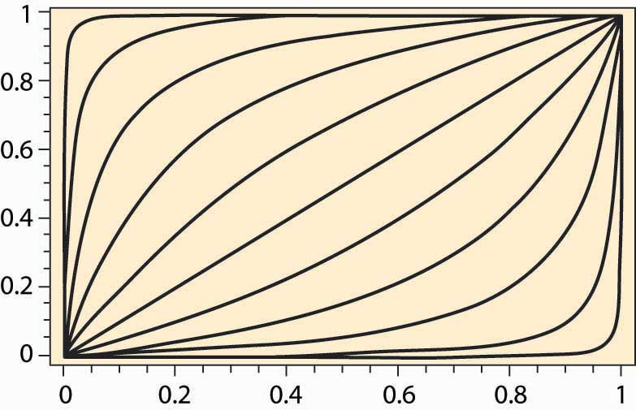

The EdgeworthFrancis Edgeworth (1845–1926) introduced a variety of mathematical tools, including calculus, for considering economics and political issues, and was certainly among the first to use advanced mathematics for studying ethical problems. box considers a two-person, two-good “exchange economy.” That is, two people have utility functions of two goods and endowments (initial allocations) of the two goods. The Edgeworth boxA graphical representation of the exchange problem facing participants in a two-good exchange economy. is a graphical representation of the exchange problem facing these people and also permits a straightforward solution to their exchange problem.
Figure 14.1 The Edgeworth box
The Edgeworth box is represented in Figure 14.1 "The Edgeworth box". Person 1 is “located” in the lower left (southwest) corner, and Person 2 in the upper right (northeast) corner. The X good is given on the horizontal axis, the Y good on the vertical. The distance between them is the total amount of the good that they have between them. A point in the box gives the allocation of the good—the distance to the lower left to Person 1, the remainder to Person 2. Thus, for the point illustrated, Person 1 obtains (x1, y1), and Person 2 obtains (x2, y2). The total amount of each good available to the two people will be fixed.
What points are efficient? The economic notion of efficiency is that an allocation is efficient if it is impossible to make one person better off without harming the other person; that is, the only way to improve 1’s utility is to harm 2, and vice versa. Otherwise, if the consumption is inefficient, there is a rearrangement that makes both parties better off, and the parties should prefer such a point. Now, there is no sense of fairness embedded in the notion, and there is an efficient point in which one person gets everything and the other gets nothing. That might be very unfair, but it could still be the case that improving 2 must necessarily harm 1. The allocation is efficient if there is no waste or slack in the system, even if it is wildly unfair. To distinguish this economic notion, it is sometimes called Pareto efficiencyCondition that exists when there is no waste or slack in a system, even if it is wildly unfair..Vilfredo Pareto (1848–1923) was a pioneer in replacing concepts of utility with abstract preferences. His work was later adopted by the economics profession and remains the modern approach.
We can find the Pareto-efficient points by fixing Person 1’s utility and then asking what point, on the indifference isoquant of Person 1, maximizes Person 2’s utility. At that point, any increase in Person 2’s utility must come at the expense of Person 1, and vice versa; that is, the point is Pareto efficient. An example is illustrated in Figure 14.2 "An efficient point".
Figure 14.2 An efficient point
In Figure 14.2 "An efficient point", the isoquant of Person 1 is drawn with a dark, thick line. This utility level is fixed. It acts like the “budget constraint” for Person 2. Note that Person 2’s isoquants face the opposite way because a movement southwest is good for 2, since it gives him more of both goods. Four isoquants are graphed for Person 2, and the highest feasible isoquant, which leaves Person 1 getting the fixed utility, has the Pareto-efficient point illustrated with a large dot. Such points occur at tangencies of the isoquants.
This process of identifying the points that are Pareto efficient can be carried out for every possible utility level for Person 1. What results is the set of Pareto-efficient points, and this set is also known as the contract curveCurve in which every point maximizes one person’s utility given another’s utility.. This is illustrated with the thick line in Figure 14.3 "The contract curve". Every point on this curve maximizes one person’s utility given the other’s utility, and they are characterized by the tangencies in the isoquants.
The contract curve need not have a simple shape, as Figure 14.3 "The contract curve" illustrates. The main properties are that it is increasing and ranges from Person 1 consuming zero of both goods to Person 2 consuming zero of both goods.
Figure 14.3 The contract curve
Example: Suppose that both people have Cobb-Douglas utility. Let the total endowment of each good be one, so that x2 = 1 – x1. Then Person 1’s utility can be written as
u1 = xα y1–αα, and 2’s utility is u2 = (1 – x)β (1 – y)1–β. Then a point is Pareto efficient if
Thus, solving for y, a point is on the contract curve if
Thus, the contract curve for the Cobb-Douglas case depends on a single parameter It is graphed for a variety of examples (α and β) in Figure 14.4 "Contract curves with Cobb-Douglas utility".
Figure 14.4 Contract curves with Cobb-Douglas utility
